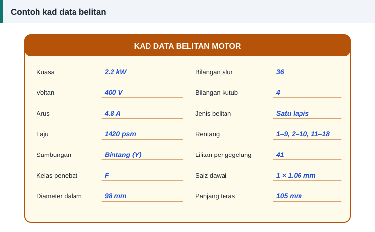

Panduan bengkel
Cara Merekod Data Belitan Sebelum Membuka Motor
Peraturan pertama bengkel: jangan potong apa-apa sebelum semuanya dicatat. Belitan lama ialah satu-satunya salinan reka bentuk pengilang yang anda ada.


Sebelum motor dibuka
- Salin semua data plat nama, atau ambil gambar yang jelas.
- Tandakan kedudukan setiap penutup hujung terhadap rangka dengan penebuk pusat.
- Catat susunan wayar pada papan terminal dan labelkan setiap satu.
- Catat kedudukan kotak terminal dan arah pusingan.
Selepas rotor dikeluarkan
- Kira bilangan alur stator.
- Ukur diameter dalam stator pada dua arah bersilang.
- Ukur panjang teras, tidak termasuk hujung belitan.
- Ukur kedalaman dan lebar alur, atau tekap bentuknya pada kertas.
- Periksa teras: kesan geseran rotor, gigi bengkok dan laminasi yang terlebur.
Data gegelung
- Jenis belitan: satu lapis atau dua lapis; lap, sepusat atau rantai.
- Rentang setiap gegelung dalam satu kumpulan, ditulis seperti 1–8 dan 2–7.
- Bilangan gegelung setiap kumpulan dan bilangan kumpulan setiap fasa.
- Panjang unjuran hujung belitan di luar teras, di kedua-dua belah. Belitan baharu tidak boleh lebih panjang.
- Lakaran satu kumpulan gegelung dengan nombor alurnya.
Data dawai dan lilitan
- Potong satu gegelung dengan bersih di satu hujung dan kira dawainya. Kira dua atau tiga gegelung sebagai pengesahan.
- Buang enamel pada sepotong dawai dan ukur diameter kuprum dengan mikrometer.
- Catat bilangan dawai selari dalam setiap lilitan, dan saiz setiap satu jika berbeza.
- Timbang belitan lama jika mahu menganggar kuprum yang perlu dibeli.
Data sambungan
- Bintang atau delta di dalam, dan bilangan laluan selari setiap fasa.
- Cara kumpulan gegelung disambung antara satu sama lain.
- Kedudukan wayar keluar pada hujung belitan.
- Lokasi pelindung haba atau termistor, jika ada.
Semak sebelum membuang belitan lama
Pastikan belitan lama itu belitan asal pengilang. Jika motor pernah dililit semula, datanya mungkin sudah tersilap sejak dahulu.
Satu semakan pantas: masukkan ukuran teras dan bilangan lilitan ke dalam kalkulator pada ruangan "Lilitan per gegelung asal". Jika ketumpatan fluks yang dipaparkan berada dalam julat lazim, data anda munasabah. Jika jauh di luar julat, kira semula sebelum bukti dimusnahkan.
Simpan kad data
Motor yang sama mungkin kembali ke bengkel, atau motor serupa datang daripada pelanggan lain. Kad data yang disimpan menjimatkan kerja mengira semula.
Rujukan dan bacaan lanjut
Artikel berkaitan
Langkah Demi Langkah Melilit Semula Motor Tiga Fasa
Daripada menanggalkan belitan lama hingga ujian akhir, ikuti sepuluh langkah melilit semula stator motor tiga fasa dengan kemas, selamat dan mengikut amalan baik bengkel.
Belitan Lap dan Belitan Sepusat: Cara Mengenal dan Melilitnya
Dua bentuk gegelung paling biasa ditemui dalam stator motor aruhan ialah lap dan sepusat. Ketahui rupa, kelebihan, cara membaca rentangnya dan bila setiap satu digunakan.
Cara Membaca Plat Nama Motor Elektrik
Plat nama memberi semua data yang diperlukan sebelum melilit semula: voltan, arus, laju, sambungan dan kelas penebat. Ketahui maksud setiap ruangan satu per satu.